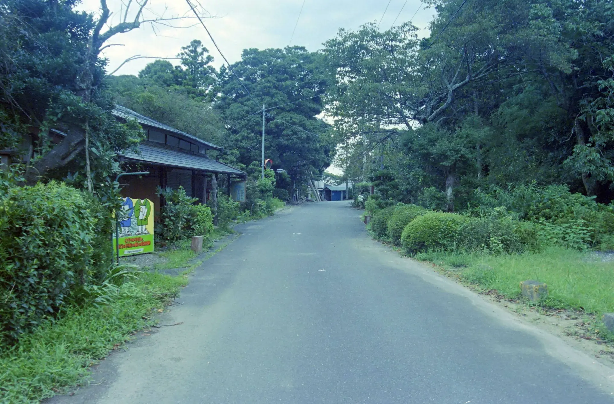
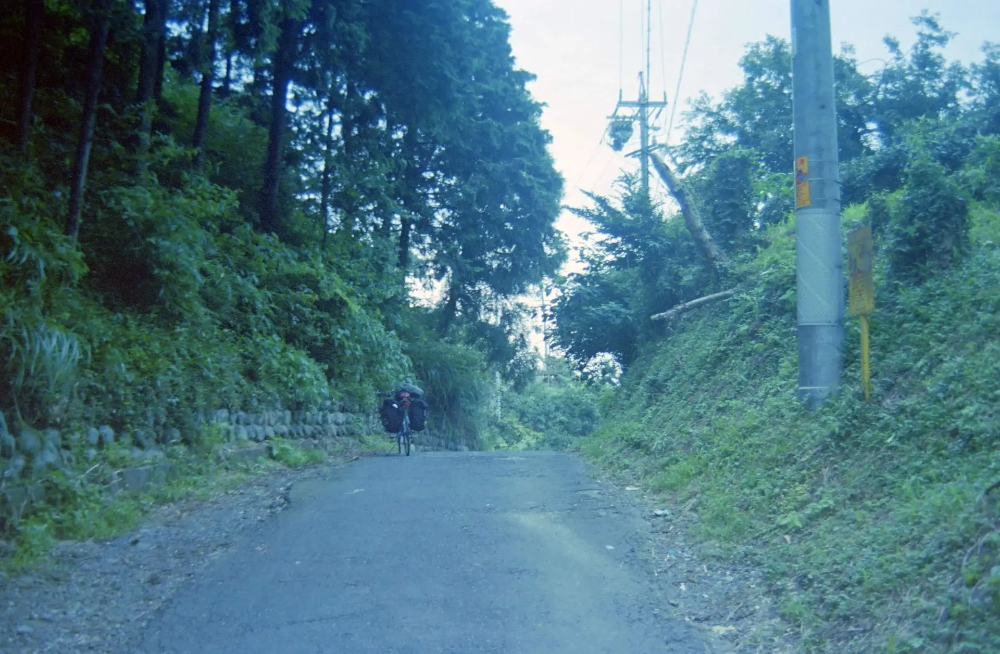
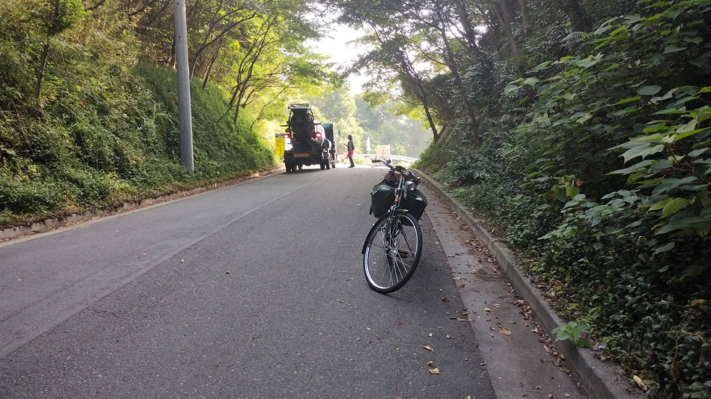
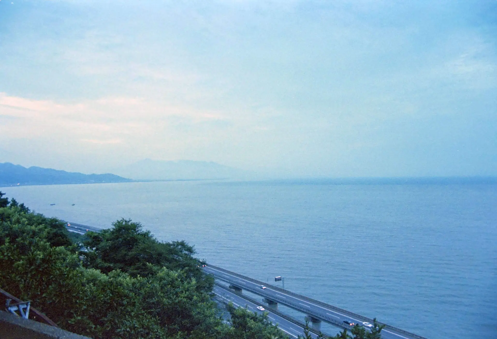

2003年8月2日～8月15日 埼玉実家～大阪自転車旅行 Part3
暗峠を越えて大阪へ。大阪から少し京都側へ戻って、門真市のネカフェに泊まった。
8月10日 門真～京都
京都へ短距離の走行。この日、母親が京都へ旅行に来ていて合流した。京都のホテルに泊まった。京都を少しだけ観光したが写真はない。
8月11日 京都～大垣
ひたすら東へ。この日、本当に一切記憶がない。うっすらと近江大橋を越えた記憶だけはあるかもしれない。あと、大垣駅で野宿したのも覚えている。ほんとうになにも覚えていない。
8月12日 大垣～浜松
さて、この日も全然覚えていない。名古屋城を遠くから見た気がする。覚えているのは、岡崎から豊橋までの国道1号線の山越えが暑くてとてもきつかったことである。というか全体的に、若いこともあってキャンプ装備なのに走行距離が長い。浜名湖もまったく覚えていない。
この日は浜松駅近くの非常に古い設備のホテルに宿泊。
8月13日 浜松～三島
この日だけは、帰路で唯一写真を撮っている。というか単純にフィルムがなかったのだと思う。当時、写真を撮れば撮るだけ現像とプリントにお金がかかったので、持っていく本数を決めて、それ以上撮らないようにしていたのだろう。
さて、写真を撮っているのはまず、小夜の中山である。
小夜の中山は静岡県の金谷と掛川の間にある峠だが、地味に面倒な峠だ。このあと、2007年と2008年、2025年にも越えているのだが、その3回はすべてトンネル経由だった。このときは疎の道を知らず、律儀に峠越えの旧道を回っていたのでさらにきつかった。当時当然スマホはなく、ガラケーのimodeやezwebでは情報を集めるのは無理だった。
さて、次の写真は、おそらくなのだが薩埵峠だと思われる。
小夜の中山で撮影したのかとも思ったのだが、切通はないようだ。下の、2025年に撮影した写真と比べるとちょっと雰囲気が違う気もするのだが……。
※下写真は2025年9月1日撮影
さて、薩埵峠といえば東海道でもいちばんの絶景として有名な場所である。冬の晴れた日は富士山がよく見える。このときは夏の夜で見えなかったが、それでも、駿河湾と東名高速が見える絶景に感動した。じつは、たまたま地図を見て、由比の国道を迂回するためだけに前情報なしで通ったので、さらに感動した。
しかし、この2003年の大阪旅行の写真は、これで最後なのだった。
この日は三島まで走った。三島でどこに泊まったかまったく覚えていない。あと、たしか沼津でパンクしたはず。
8月14日 三島～小田原
この日は限界が来たのか、箱根越えだけで終わってしまった。雨が降っていて、とにかく三島側から登るのが辛かった記憶がある。三島側はかなり道路が改良されていて、その分坂が急になっているのできつかったのだろう。しかし、せめて箱根峠の写真くらい撮影すればよかったのに。
この日は小田原駅近くのスーパー銭湯に泊まった。「万葉の湯」という施設で、2025年現在も営業しているようだ。スーパー銭湯の仮眠室のケーブルテレビで、1980年代のアニメの「ダーティペア」が流れていたのを覚えている。
8月15日 小田原～埼玉実家
もはやなにも覚えていない。横浜の戸塚あたりが有料道路ばかりでわかりにくかった記憶はある。あと、都内でスポークが折れた記憶もある。高校生の初めてのツーリングで、自転車は満身創痍になってしまったのだった。
ということで、帰路はほとんど写真を撮っていないが、これで2003年、はじめてのロングツーリングは終わり。この旅行では、テントを張らないで野宿するか、ホテルに泊まるかのどちらかで、結局キャンプは静岡の佐久間の1回しか行わなかった。そのあとも高校時代の野宿は基本的にテントなしで道の駅のベンチだったので、本格的にテントで野営するのは大学生になってからになる。
2025年12月17日記事公開